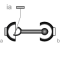

UniversalSphericalUniversal - spherical joint aggregation (1 constraint, no potential states) |

|
Information
This information is part of the Modelica Standard Library maintained by the Modelica Association.
This component consists of a universal joint at frame_a and a spherical joint at frame_b that are connected together with a rigid rod, see default animation figure (the arrows are not part of the default animation):

This joint aggregation has no mass and no inertia and introduces the constraint that the distance between the origin of frame_a and the origin of frame_b is constant (= Frames.length(rRod_ia)). The universal joint is defined in the following way:
- The rotation axis of revolute joint 1 is along parameter vector n1_a which is fixed in frame_a.
- The rotation axis of revolute joint 2 is perpendicular to axis 1 and to the line connecting the universal and the spherical joint.
The definition of axis 2 of the universal joint is performed according to the most often occurring case for the sake of simplicity. Otherwise, the treatment is much more complicated and the number of operations is considerably higher, if axis 2 is not orthogonal to axis 1 and to the connecting rod.
Note, there is a singularity when axis 1 and the connecting rod are parallel to each other. Therefore, if possible n1_a should be selected in such a way that it is perpendicular to rRod_ia in the initial configuration (i.e., the distance to the singularity is as large as possible).
An additional frame_ia is present. It is fixed in the connecting rod at the origin of frame_a. The placement of frame_ia on the rod is implicitly defined by the universal joint (frame_a and frame_ia coincide when the angles of the two revolute joints of the universal joint are zero) and by parameter vector rRod_ia, the position vector from the origin of frame_a to the origin of frame_b, resolved in frame_ia.
The easiest way to define the parameters of this joint is by moving the MultiBody system in a reference configuration where all frames of all components are parallel to other (alternatively, at least frame_a and frame_ia of the UniversalSpherical joint should be parallel to other when defining an instance of this component). Since frame_a and frame_ia are parallel to other, vector rRod_ia from frame_a to frame_b resolved in frame_ia can be resolved in frame_a (or the world frame, if all frames are parallel to other).
This joint aggregation can be used in cases where in reality a rod with spherical joints at end are present. Such a system has an additional degree of freedom to rotate the rod along its axis. In practice this rotation is usually of no interest and is mathematically removed by replacing one of the spherical joints by a universal joint. Still, in most cases the Joints.SphericalSpherical joint aggregation can be used instead of the UniversalSpherical joint since the rod is animated and its mass properties are approximated by a point mass in the middle of the rod. The SphericalSpherical joint has the advantage that it does not have a singular configuration.
In the public interface of the UniversalSpherical joint, the following (final) parameters are provided:
parameter Real rodLength(unit="m") "Length of rod"; parameter Real eRod_ia[3] "Unit vector along rod, resolved in frame_ia"; parameter Real e2_ia [3] "Unit vector along axis 2, resolved in frame_ia";
This allows a more convenient definition of data which is related to the rod. For example, if a box shall be connected at frame_ia directing from the origin of frame_a to the middle of the rod, this might be defined as:
Modelica.Mechanics.MultiBody.Joints.UniversalSpherical jointUS(rRod_ia={1.2, 1, 0.2});
Modelica.Mechanics.MultiBody.Visualizers.FixedShape shape(shapeType = "box",
lengthDirection = jointUS.eRod_ia,
widthDirection = jointUS.e2_ia,
length = jointUS.rodLength/2,
width = jointUS.rodLength/10);
equation
connect(jointUS.frame_ia, shape.frame_a);
Parameters (18)
| animation |
Value: true Type: Boolean Description: = true, if animation shall be enabled |
|---|---|
| showUniversalAxes |
Value: true Type: Boolean Description: = true, if universal joint shall be visualized with two cylinders, otherwise with a sphere (provided animation=true) |
| computeRodLength |
Value: false Type: Boolean Description: = true, if distance between frame_a and frame_b shall be computed during initialization (see info) |
| n1_a |
Value: {0, 0, 1} Type: Axis Description: Axis 1 of universal joint resolved in frame_a (axis 2 is orthogonal to axis 1 and to rod) |
| rRod_ia |
Value: {1, 0, 0} Type: Position[3] (m) Description: Vector from origin of frame_a to origin of frame_b, resolved in frame_ia (if computeRodLength=true, rRod_ia is only an axis vector along the connecting rod) |
| sphereDiameter |
Value: world.defaultJointLength Type: Diameter (m) Description: Diameter of spheres representing the universal and the spherical joint |
| rodShapeType |
Value: "cylinder" Type: ShapeType Description: Shape type of rod connecting the universal and the spherical joint |
| rodWidth |
Value: sphereDiameter / Types.Defaults.JointRodDiameterFraction Type: Distance (m) Description: Width of rod shape in direction of axis 2 of universal joint. |
| rodHeight |
Value: rodWidth Type: Distance (m) Description: Height of rod shape in direction that is orthogonal to rod and to axis 2 |
| rodExtra |
Value: 0.0 Type: ShapeExtra Description: Additional parameter depending on rodShapeType |
| cylinderLength |
Value: world.defaultJointLength Type: Distance (m) Description: Length of cylinders representing the two universal joint axes |
| cylinderDiameter |
Value: world.defaultJointWidth Type: Distance (m) Description: Diameter of cylinders representing the two universal joint axes |
| kinematicConstraint |
Value: true Type: Boolean Description: = false, if no constraint shall be defined, due to analytically solving a kinematic loop |
| checkTotalPower |
Value: false Type: Boolean Description: = true, if total power flowing into this component shall be determined (must be zero) |
| rodLength |
Value: Type: Distance (m) Description: Length of rod (distance between origin of frame_a and origin of frame_b) |
| eRod_ia |
Value: Modelica.Math.Vectors.normalizeWithAssert(rRod_ia) Type: Real[3] Description: Unit vector from origin of frame_a to origin of frame_b, resolved in frame_ia |
| e2_ia |
Value: Modelica.Math.Vectors.normalize(cross(n1_a, eRod_ia)) Type: Real[3] Description: Unit vector in direction of axis 2 of universal joint, resolved in frame_ia (orthogonal to n1_a and eRod_ia; note: frame_ia is parallel to frame_a when the universal joint angles are zero) |
| e3_ia |
Value: cross(eRod_ia, e2_ia) Type: Real[3] Description: Unit vector perpendicular to eRod_ia and e2_ia, resolved in frame_ia |
Inputs (4)
| sphereColor |
Default Value: Modelica.Mechanics.MultiBody.Types.Defaults.JointColor Type: Color Description: Color of spheres representing the universal and the spherical joint |
|---|---|
| rodColor |
Default Value: Modelica.Mechanics.MultiBody.Types.Defaults.RodColor Type: Color Description: Color of rod shape connecting the universal and the spherical joints |
| cylinderColor |
Default Value: Modelica.Mechanics.MultiBody.Types.Defaults.JointColor Type: Color Description: Color of cylinders representing the two universal joint axes |
| specularCoefficient |
Default Value: world.defaultSpecularCoefficient Type: SpecularCoefficient Description: Reflection of ambient light (= 0: light is completely absorbed) |
Connectors (3)
| frame_a |
Type: Frame_a Description: Coordinate system a fixed to the component with one cut-force and cut-torque |
|
|---|---|---|
| frame_b |
Type: Frame_b Description: Coordinate system b fixed to the component with one cut-force and cut-torque |
|
| frame_ia |
Type: Frame_a Description: Coordinate system at the origin of frame_a, fixed at the rod connecting the universal with the spherical joint |
Components (9)
| world |
Type: World |
|
|---|---|---|
| R_rel_ia1 |
Type: Orientation |
|
| R_rel_ia2 |
Type: Orientation |
|
| R_rel_ia |
Type: Orientation Description: Rotation from frame_a to frame_ia |
|
| rodShape |
Type: Shape |
|
| sphericalShape_b |
Type: Shape |
|
| sphericalShape_a |
Type: Shape |
|
| universalShape1 |
Type: Shape |
|
| universalShape2 |
Type: Shape |
Used in Examples (1)
|
Modelica.Mechanics.MultiBody.Examples.Loops One kinematic loop with four bars (with UniversalSpherical joint; 1 non-linear equation) |